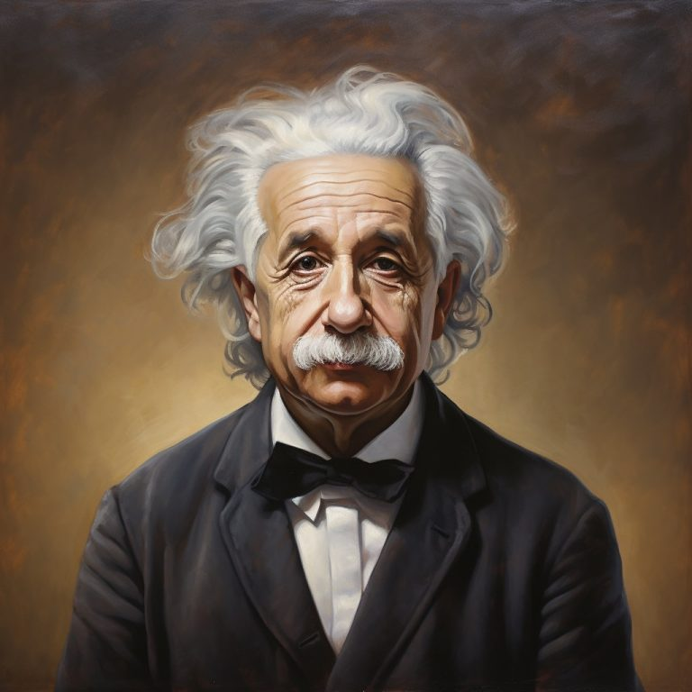
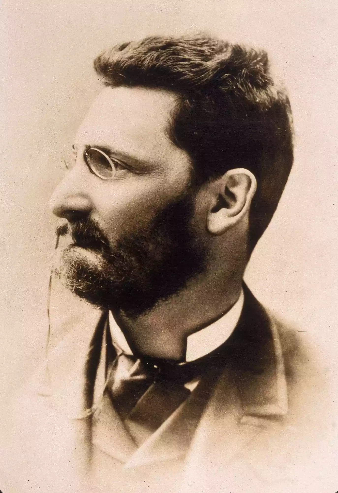

1. Albert Einstein: The Genius Who Fled Nazi Germany
Source: Astrum People - Albert Einstein Biography
In 1933, Albert Einstein, already renowned as one of the greatest minds in science, made a life-changing decision to leave Nazi Germany for the United States. This move had far-reaching consequences that extended well beyond his personal safety:
- Einstein's groundbreaking work on theoretical physics, including the theory of relativity, laid the foundation for numerous technological advancements.
- His contributions to the Manhattan Project during World War II played a crucial role in developing the atomic bomb, reshaping global power dynamics.
- Einstein's migration to the U.S. solidified America's position as a scientific powerhouse in the 20th century.
2. Abdulfattah Jandali: The Syrian Immigrant Who Fathered a Tech Revolution
Source: Wikipedia - Steve Jobs
Few people know that Steve Jobs, the visionary co-founder of Apple, was the son of a Syrian immigrant named Abdulfattah Jandali. While Jobs was raised by adoptive parents, the indirect impact of his biological father's migration was monumental:
- Steve Jobs revolutionized personal computing, mobile technology, and digital entertainment through Apple's innovative products.
- The iPhone, introduced in 2007, fundamentally changed how we communicate, work, and access information.
- Jandali's migration to the U.S. for higher education inadvertently set the stage for Silicon Valley's dominance in the global tech industry.
3. Levi Strauss: The Bavarian Who Clothed America
Source: Million Dollar Minds - The Success Story of the Father of Jeans and Founder of Levi's
Levi Strauss, a Jewish immigrant from Bavaria, moved to the United States in the mid-1800s seeking better opportunities. His journey to San Francisco during the California Gold Rush led to an invention that would become an American icon:
- Strauss created durable denim jeans to meet the needs of miners, revolutionizing workwear.
- Levi's jeans became a symbol of American culture, worn by everyone from cowboys to rock stars.
- Today, Levi Strauss & Co. is a global fashion powerhouse, all stemming from one immigrant's entrepreneurial spirit.
4. Joseph Pulitzer: The Hungarian Who Transformed American Journalism
Source: ThoughtCo - Joseph Pulitzer
Joseph Pulitzer's journey from penniless Hungarian immigrant to media mogul is a testament to the power of determination and vision:
- Pulitzer became one of the most influential figures in American journalism, championing investigative reporting and media ethics.
- He established the Pulitzer Prize, which continues to honor excellence in journalism and the arts.
- Pulitzer's impact on the Fourth Estate has shaped the standards of journalism not just in the U.S., but globally.
5. Nikola Tesla: The Serbian Genius Who Lit Up the World
Source: Insauga - Famous Inventor Honoured with Statues on Both Sides of Niagara Falls
In 1884, Serbian-born inventor Nikola Tesla migrated to the United States, bringing with him ideas that would illuminate the future:
- Tesla's development of alternating current (AC) electrical systems revolutionized power generation and distribution.
- His inventions and patents laid the groundwork for modern electrical engineering.
- Tesla's contributions continue to power our cities, homes, and industries, showcasing the lasting impact of his migration.
The Ripple Effect of Migration: Shaping Our World
These stories highlight how migration is not just a personal journey but a catalyst for global change. The "butterfly effect" of these migrations demonstrates that a single decision to move can lead to:
- Groundbreaking scientific discoveries
- Technological revolutions
- Cultural shifts
- Economic transformations
- Advancements in human rights and freedom of expression
Whether fleeing persecution, seeking education, or chasing opportunity, migrants have repeatedly proven to be powerful agents of change. Their journeys remind us that every movement, no matter how small, has the potential to reshape our world in profound and unexpected ways.
As we reflect on these world-changing migrations, we're reminded of the immense potential that lies within the movement of people across borders. In our increasingly interconnected world, the next world-changing migrant could be just around the corner, ready to make their mark on history.